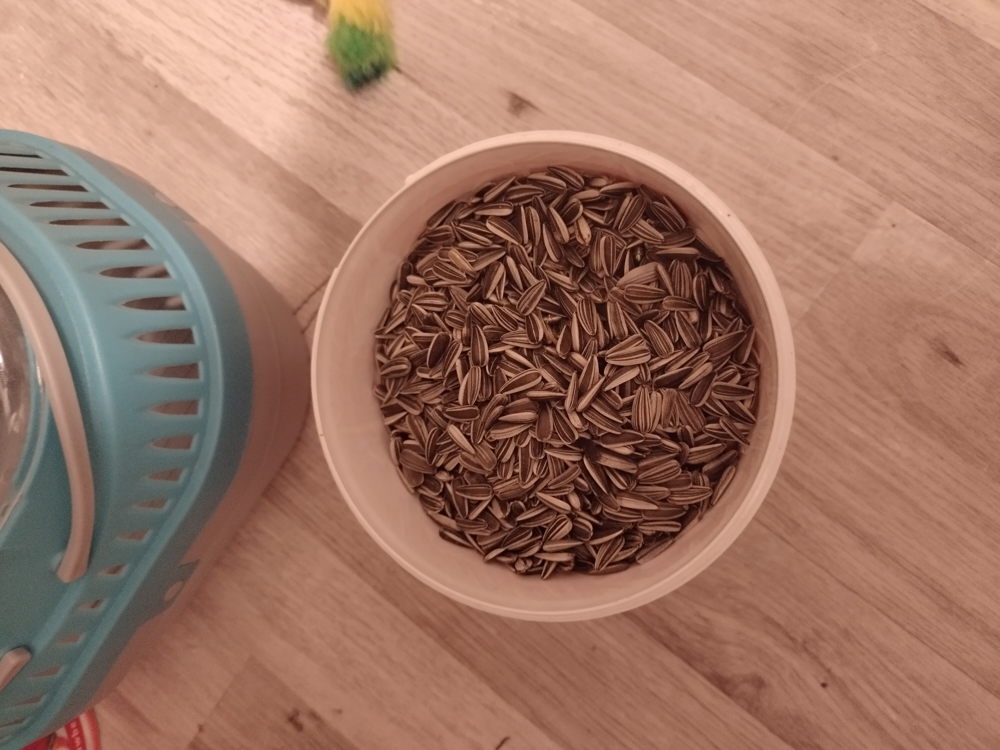
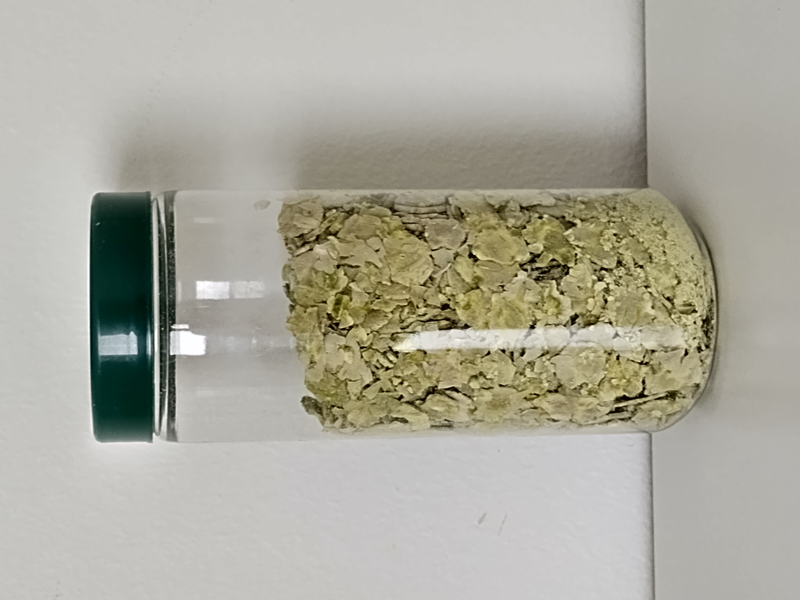
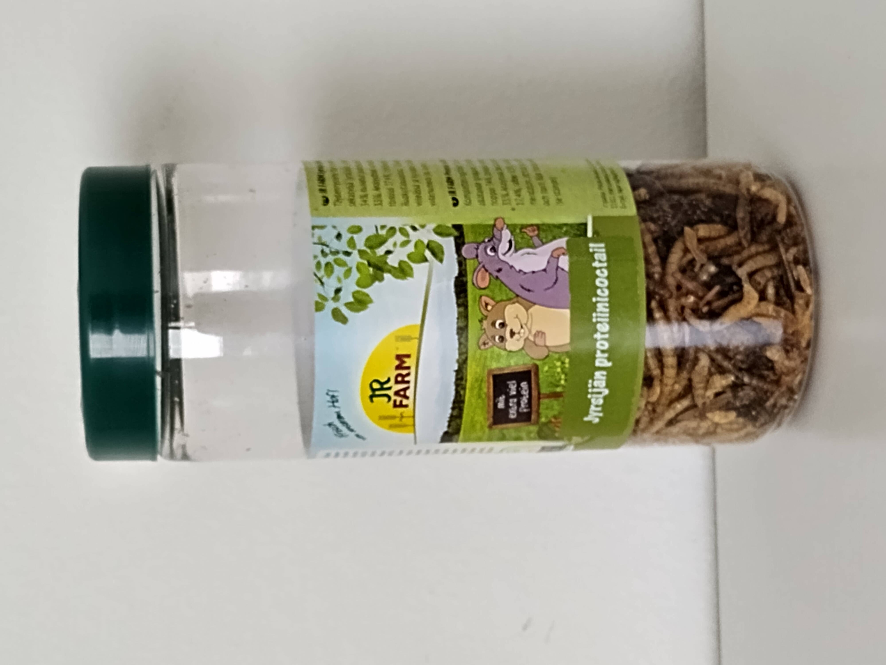
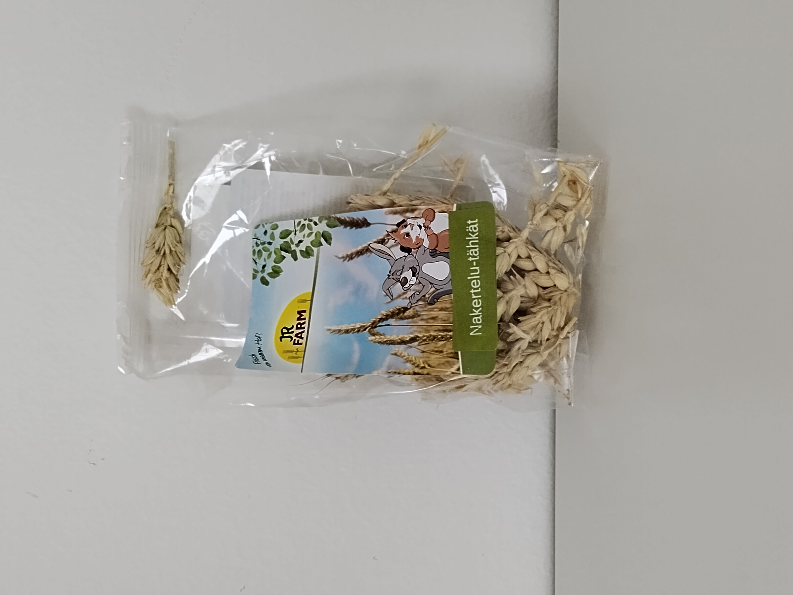

Auringonkukansiemenet

Auringonkukansiemenet ovat hamstereiden suosikkiherkku. Ne ovat maukkaita ja ravitsevia, mutta niitä tulisi antaa vain satunnaisesti, koska ne sisältävät paljon rasvaa.


Auringonkukansiemenet ovat hamstereiden suosikkiherkku. Ne ovat maukkaita ja ravitsevia, mutta niitä tulisi antaa vain satunnaisesti, koska ne sisältävät paljon rasvaa.

Hernehiutaleet ovat myös hyvä lisä hamstereiden ruokavalioon. Ne tarjoavat proteiinia ja kuitua, mutta niitä tulisi antaa kohtuudella.

Proteiinicoctail on hyvä proteiinin lähde hamstereille. Se voidaan antaa kuivattuina tai elävänä, mutta sitä tulisi antaa kohtuudella.

Nakertelutähkät ovat hyvä lisä hamstereiden ruokavalioon. Ne tarjoavat kuitua ja auttavat pitämään hampaat kunnossa, mutta niitä tulisi antaa kohtuudella.